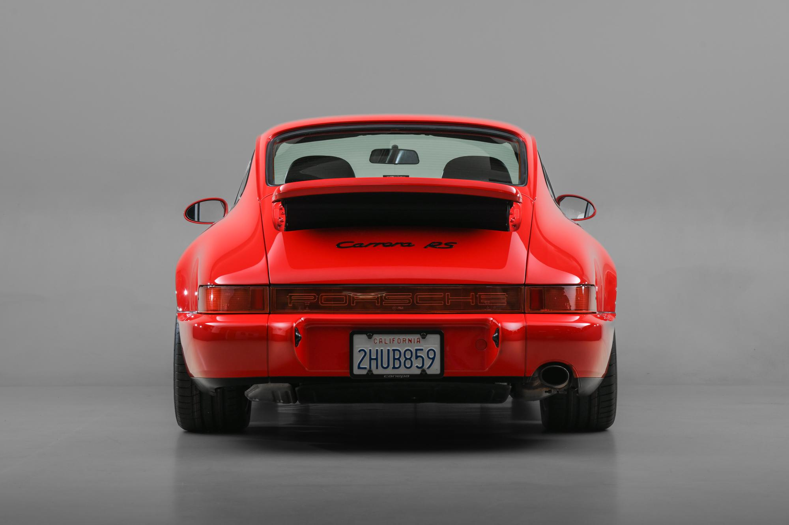
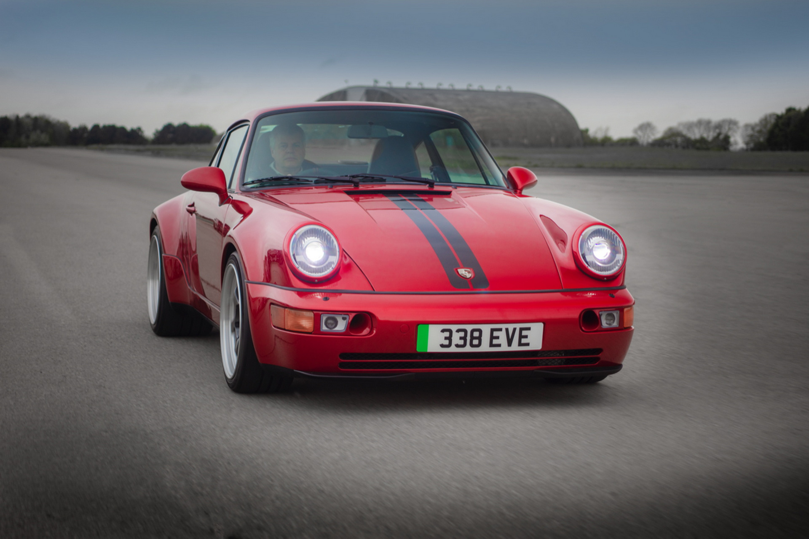
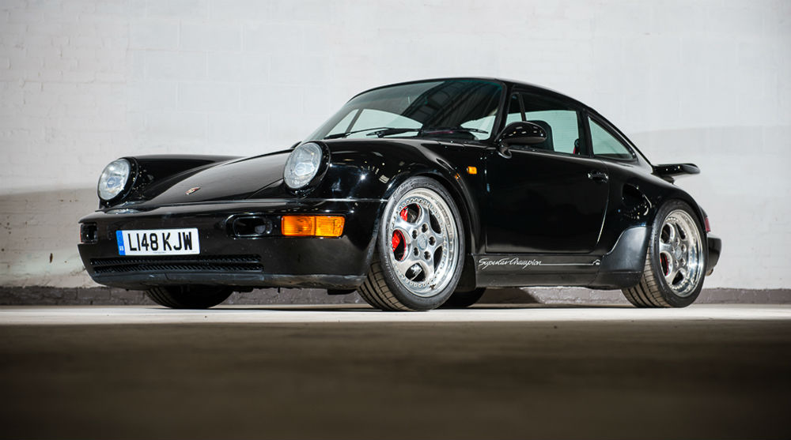
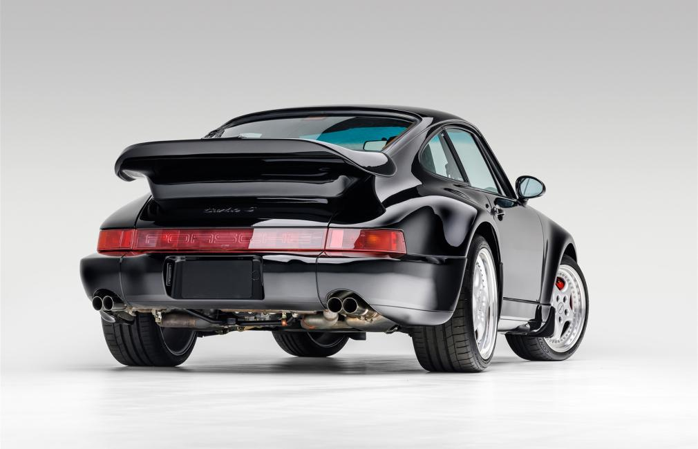
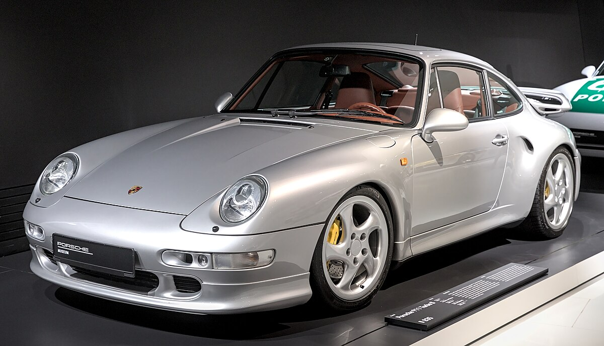
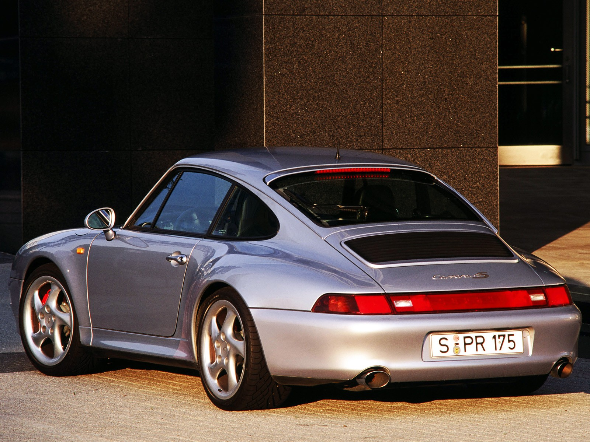

Lançada em 1964 como Porsche 901 e renomeada para 911, essa geração foi o início da lenda. O design foi
criado por Ferdinand "Butzi" Porsche, e o modelo era focado no desempenho com motor 6 cilindros traseiro.
 
A versão 911 Turbo (1975) foi um marco, com o famoso sopro de turbo e aumento de potência. O 911 Targa
(1967), com seu teto removível, também foi um sucesso. A primeira geração permaneceu em produção até 1989,
com várias atualizações.
2ª Geração (1990-1994) - Porsche 964
A 964 foi uma evolução significativa. A Porsche introduziu a suspensão traseira independente, melhorando a
estabilidade, e também freios ABS, algo inovador na época.
 
O 911 Turbo desta geração foi o primeiro a ter tração integral, aumentando a aderência e o controle. As
mudanças eram principalmente focadas em melhorar o desempenho e a segurança, sem alterar muito o design>
3ª Geração (1995-1998) - Porsche 993
A 993 é muito apreciada pelos puristas, sendo a última geração com motor refrigerado a ar. Introduziu a
suspensão traseira independente e melhorou a durabilidade e confiabilidade.
 
O design manteve o estilo clássico do 911, com um acabamento mais robusto. O modelo foi muito aclamado
por sua condução precisa e qualidade de construção, consolidando a Porsche como referência no
Porsche Cup
é uma série de corridas monomarca criada pela Porsche em 1986, inicialmente na Alemanha. Seu objetivo é
proporcionar uma plataforma para pilotos competirem com carros idênticos, geralmente o Porsche 911 GT3 Cup,
permitindo que o talento do piloto seja o principal fator de sucesso. A competição se expandiu para vários
países, incluindo a Porsche Mobil 1 Supercup, que é a versão internacional, com corridas realizadas durante
os finais de semana da Fórmula 1. No Brasil, a Porsche Carrera Cup Brasil foi criada em 2005, ganhando
popularidade e sendo uma das principais competições de automobilismo do país.